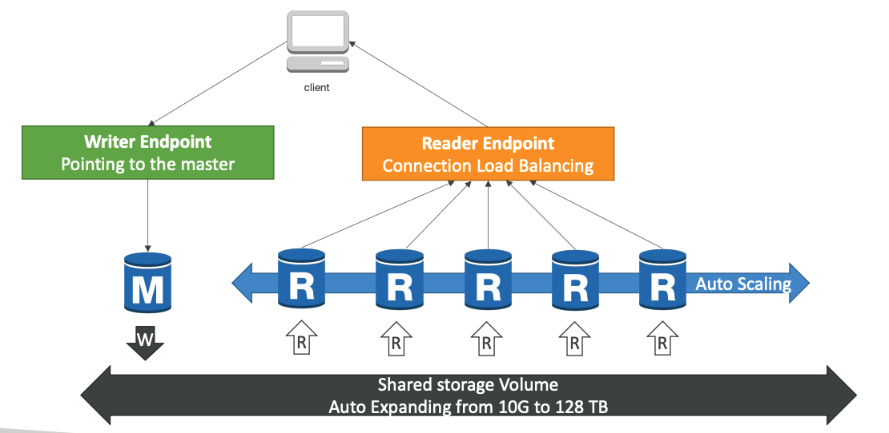
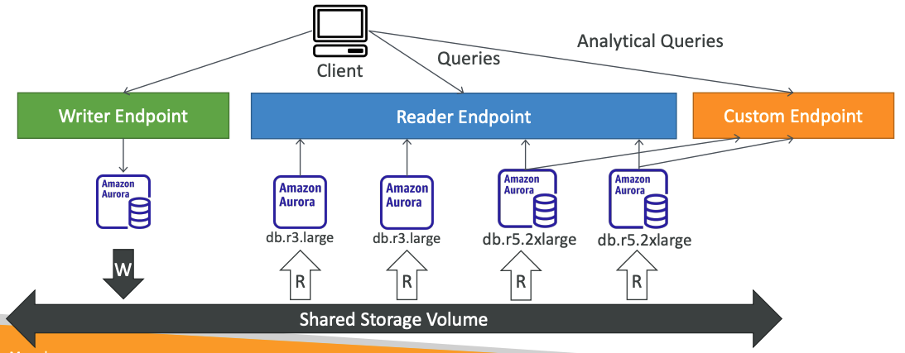
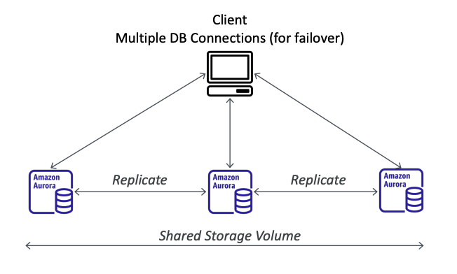

🌿 What?
- Là công nghệ độc quyá»n của AWS(không phải open source)
- Tương thÃch với Postgres và MySQL.
- Aurora là AWS cloud optimized, x5 performance so với MySQL trên RDS và x3 performance so với Postgres trên RDS.
- Tự động tăng bộ nhớ, từ 10Gb(mặc định) có thể tăng lên 128TB
- Aurora có 15 replicas trong khi MySQL có 5, và replication process cũng nhanh hơn(10ms)
- Chuyển đổi dự phòng là tức thá»i. Đảm bảo High Available
- GÃa của Aurora đắt hơn 20% so với RDS, nhưng nó cũng hiểu quả hơn.
🌿 High Availability và Read Scaling
- Luôn tạo ra 6 bản sao ở trên 3 AZ mỗi khi ghi gì đó và o DB. Có khả năng nhân rộng, tự hồi phục cũng như tự động mở rộng.
- 4 bản sao trong 6 dùng để viết.
- 3 bản sao dùng để Ä‘á»c
- Có một Aurora Instance để ghi (master)
- Tự động chuyển đổi dự phòng nếu master có lỗi trong vòng chưa đến 30s.
- Master + 15 read replicas
- Hỗ trợ nhân rộng giữa các Region.
🌿 Aurora DB Cluster

- Luôn chia sẻ dữ liệu lưu trữ với tất cả các cụm(master + read replicas)
- Client connect thẳng tới master để ghi dữ liệu(writer endpoint)
- Client conenct tới một Connection Load Balancing(reader endpoint) để truy cáºp đến cụm read replicas.
🌿 Feature of Aurora
- Tự động chuyển đổi dự phòng nếu có lỗi
- Liên tục backup và recovery
- Bảo máºt và luôn sẵn sà ng sá» dụng
- Tự động scaling
- Zero downtime
- Có thể restore data tại bất kỳ thá»i điểm nà o.
🌿 Custom EndPoint
- Cho phép xác định custom endpoint để thực hiện tác vụ riêng.
- Và dụ cta có một cụm instance to hơn và nó tÃnh toán tốt hơn, tạo một custom endpoint trỠđến cụm đó để thực hiẹn các query phân tÃch dữ liệu(hay các query cần tÃnh toán nhiá»u) để xá» lý nhanh hơn. 
🌿 Aurora không có máy chủ
- Tự động tạo khởi tạo cũng như scaling dựa theo tình trạng sỠdụng thực tế.
- Phù hợp với những ứng dụng không dự đoán trước được lưu lượng sỠdụng.
- Không cần lên kế hoạch sỠdụng.
- Dùng đến đâu trả đến đấy.
🌿 Aurora Multi-Master
- Trong trường hợp muốn chuyển đổi dự phòng ngay láºp tức(chứ không phải đợi tầm khoảng 30s - HA), lựa chá»n option nà y.
- Tất cả các nodes Ä‘á»u được dùng để R/W và liên kết trực tiếp với client.(thay vì chuyển node chỉ Ä‘á»c lên là m master) 
🌿 Global Aurora
- Aurora Cross Region Read replicas
- Đề phòng thảm hoạ
- Dễ dà ng đặt ở má»i nơi
- Aurora Global Database (khuyên dùng)
- 1 Primary Region(Ä‘á»c/ghi)
- Tối đa 5 regions phụ(chỉ Ä‘á»c), nhân bản có ping nhá» hơn 1s
- Mỗi region phụ có thể có tối đa 16 read replicas, giảm độ trễ khi Ä‘á»c dữ liệu
- Khôi phục dữ liệu sau thảm hoạ trong vòng 1 phút.
- Chưa đến một giây để sao chép toà n bộ dữ liệu trên tất cả regions.
🌿 Aurora Machine Learning
- Support services:
- Amazon SageMaker(dùng với bất kỳ model ML nà o)
- Amazon Comprehend (dùng để phân tÃch cảm tÃnh, Ä‘á» xuất sản phẩm, …)

🌿 Aurora Backups
- Giống với RDS backups
- Backup tự động
- Lưu trữ trong 1-35 ngà y
- Backup tại tất cả các thá»i điểm, vì váºy chúng ta có thể lấy lại dữ liệu tại bất kỳ thá»i điểm nà o.
- Backup thủ công
- User tự thực hiện
- Lưu trữ vô thá»i hạn
- Backup tự động
🌿 Restore Options
- Restoring từ Aurora backup hoặc snapshot tạo một database mới.
- Restoring MySQL Aurora cluster từ S3
- Tạo một backup sỠdụng Percona XtraBackup
- Lưu file backup và o S3
- Restore từ file backup đó
🌿 Aurora Database Cloning
- Tạo một Database Cluster mới từ cái có sẵn.
- Nhanh hơn snapshot&restore
- Một DB mới được tạo ra, giống y hệt cái cũ nhưng không đồng bộ(ko liên quan gì đến nhau, vd một cái dùng cho staging, má»t cái dùng cho production)
- Rất nhanh và giá cả phải chăng
- Hữu Ãch khi muốn tạo một staging database từ production database và không ảnh hưởng đến môi trường production.